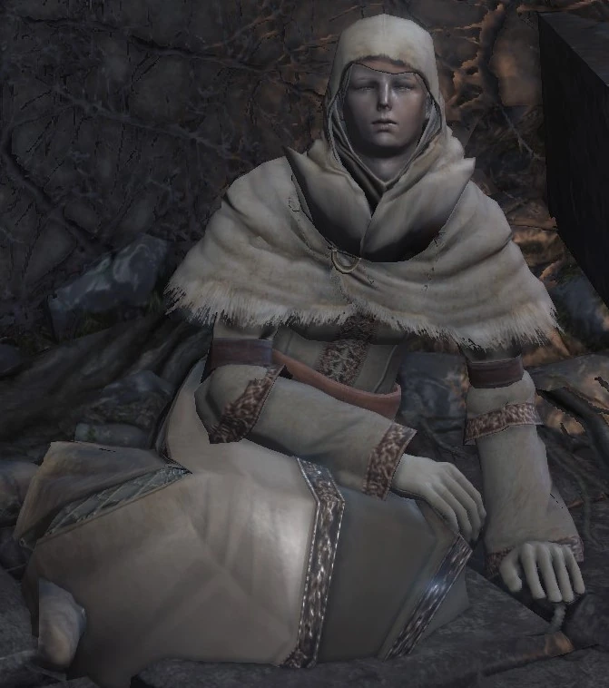

← Volver
← Volver
Irina de Carim es un NPC de Dar Souls III. Ella puede enseñar y vender Milagros al jugador en un área del juego determinada. Puede ser encontrada en el Asentamiento de los No Muertos, prisionera en una celda custodiada por Eygon de Carim. Una vez liberada y si aceptas sus servicios, ella puede ser encontrada en el Santuario del Enlace de Fuego, especificamente al final del corredor del sótano, en el ala este como una vendendora de Milagros. Irina fue originalmente a Lothric con la misión de convertirse en una Guardiana de Fuego, pero su viaje terminó abruptamente.
| Irina de Carim Objetos Disponibles | Variante | Cantidad | Probabilidad | Suerte |
|---|---|---|---|---|
| Llave de la Torre |
|
1 | 10% | No |
| Cenizas de Irina |
|
1 | 10% | No |
| Objetos disponibles para la venta | Cantidad | Almas | Tipo | Requerimiento |
|---|---|---|---|---|
| Sanar | 1 | 1000 | Luz | Liberarla de la celda |
| Reposición | 1 | 1000 | Luz | Liberarla de la celda |
| Lágrimas Acariciantes | 1 | 1500 | Luz | Liberarla de la celda |
| De Regreso | 1 | 3000 | Luz | Liberarla de la celda |
| Hoja Oscura | 1 | 10000 | Oscuro | Tomo Divino de Braile de Londor |
| Voto de Silencio | 1 | 15000 | Oscuro | Tomo Divino de Braile de Londor |
| Muerto de Nuevo | 1 | 5000 | Oscuro | Tomo Divino de Braile de Londor |
| Curación Médica | 1 | 3500 | Luz | Tomo Divino de Braile de Carim |
| Lágrimas de Negación | 1 | 10000 | Luz | Tomo Divino de Braile de Carim |
| Fuerza | 1 | 1000 | Luz | Tomo Divino de Braile de Carim |
| Luz Abundante | 1 | 5000 | Luz | Tomo Divino de Braile de Lothric |
| Arma Bendita | 1 | 8000 | Luz | Tomo Divino de Braile de Lothric |
| Barrera Mágica | 1 | 5000 | Luz | Tomo Divino de Braile de Lothric |
| Protección Profunda | 1 | 4000 | Oscuro | Tomo Divino de Braile de las Profundidades |
| Roer | 1 | 2000 | Oscuro | Tomo Divino de Braile de las Profundidades |
Diálogo del primer encuentro (Asentamiento de los No Muertos)
"¡Ah! ¿Quién anda ahí? ¿Hay alguien ahí? La oscuridad me rodea, me roe la carne. Criaturas pequeñas, no paran de morder. Así que, por favor, extiende la mano y tócame..."
Al seleccionar "tocar"
"Ah, sí, ahí estás, tan cerca. Entonces no estoy del todo sola, todavía. Alabado sea el misericordioso dios del cielo... (gesto) Oh, perdóname. Soy Irina de Carim. Vine a esta tierra para ser Guardiana de Fuego. Tu toque me ha liberado de la oscuridad. ¿Eres un Campeón/a, entonces? Soy débil e incapaz de cuidar las llamas. Pero si no te molesta, ¿podría ponerme a tu servicio?"
Si "rechazas" sus servicios
"Ah, sí, claro que lo entiendo. Aun así, te agradezco profundamente tu caricia. Nunca lo olvidaré, jamás. [Discusión] "Oh, querido Campeón. ¿Aún quieres conversar? No te preocupes por mí. Llevo mucho tiempo en la oscuridad. Es mi vocación."
Si "Aceptas sus servicios"
"Oh, gracias, dulce Campeón/a. Haré mis votos. Yo, Irina de Carim, juro solemnemente servirte."
Segundo encuentrao (Santuario del Enlace de Fuego)
"Oh, Campeón/a de la Ceniza. Bienvenido de nuevo. No estaba destinado a ser una Guardiana de Fuego, pero me honra servirte junto a la Hoguera. Los dioses son siempre misericordiosos. Mi gratitud está con ellos y contigo. Ahora soy tuya. Tus deseos son órdenes."
Al seleccionar "hablar"
"Sabes, en mi tierra natal de Carim, fui monja. Me encantaría compartir contigo las historias de milagros. Aunque, para ser honesta, solo conozco algunas. Pero si tuviera un tomo divino, podría contarte muchas historias y más. Ah, pero no puedo ver... Lo siento mucho, pero tendrás que encontrarme un Tomo Divino en braile."
Al entregarle el Tomo Divino de Carim o de Lothric
"¡Ah, me has traído un Tomo Divino en braile! Ahora puedo contar historias de nuevos milagros. Las historias de los milagros mayores pueden ser toda una epopeya... ¡Qué bien lo vamos a pasar!"
Al entregarle el Tomo Divino de las Profundidades o de Londor
"Oh, ¿qué es esto?... Campeón/a de Ceniza, este Tomo Divino está prohibido... Son cuentos oscuros que acechan en lo profundo de los hombres... Estas historias no te agradarían... Claro, si insistes, te las leeré. Solo que, ah, ah, me dan mucho miedo. Las pequeñas criaturas que me roen en la oscuridad..."
Al saludarte cuando regresas
"Ah, Campeón de Ceniza, bienvenido de nuevo. ¿Quieres escuchar una historia? Solo tienes que pedirla."
Al saludarla luego de haber comprado un Milagro Oscuro
"Ahhh, ahhh, dulce Campeón. ¿Dónde has estado? Por favor, tu caricia... Esas criaturitas, cómo muerden y pican..."
Al seleccionar "salir"
"Que tengas un buen viaje, Campeón de Ceniza. Rezo por tu seguridad."
Al seleccionar "salir" luego de comprarle un Milagro Oscuro
"Ahhh, querido Campeón. ¿Te vas tan pronto? Por favor, regresa a tiempo. Tengo miedo. De la oscuridad que me corroe."
Al seleccionar "salir" luego de comprarle todos los Milagros Sagrados
"Muchísimas gracias, querido Campeón. Que tu solemne deber concluya triunfalmente."
Luego de mudarse a la Torre
"Oh, dulce Campeón de Ceniza. Que las almas sean tu fuerza..."
Seleccionar "hablar" luego de rescatarla de Eygon
"Ahhh, ahhh, por favor, que alguien me toque. La oscuridad me rodea, me roe la carne. Criaturas pequeñas, no paran de morder. Así que, por favor, extiende la mano y tócame..."
Seleccionar "tocar" luego de rescatarla de Eygon
"Oh, ¿no hay nadie cerca que pueda tocarme? ¡Que estas cosas no me consuman!"
Seleccionar "tocar" luego de rescatarla de Eygon (usando los Guanteletes de Morne)
"Oh, tú otra vez, tócame, una última vez. Y mátame, como prometiste que harías."
Al morir
"¿Qué has hecho, dulce campeón de ceniza? Yo sólo quería..."
Al morir (luego de ser tocada mientras vistes los Guanteletes de Morne)
"Ohh...Un Caballero de Carim... ...siempre es fiel a su palabra...""

 ↑
↑